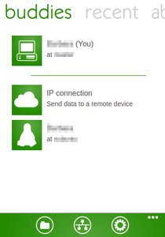
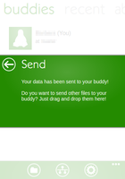
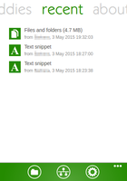

Dukto
Dieser Artikel wurde für die folgenden Ubuntu-Versionen getestet:
Ubuntu 16.04 Xenial Xerus
Ubuntu 14.04 Trusty Tahr
Zum Verständnis dieses Artikels sind folgende Seiten hilfreich:
Dukto  ist ein plattformunabhängiges Programm für Linux, Windows und Mac OS X zum Datenaustausch in lokalen Netzwerken (LAN). Die auf Qt basierende grafische Oberfläche ist englischsprachig, was aber in der Praxis keine Einschränkung bedeutet, da es sehr einfach und einsteigerfreundlich gehalten ist.
ist ein plattformunabhängiges Programm für Linux, Windows und Mac OS X zum Datenaustausch in lokalen Netzwerken (LAN). Die auf Qt basierende grafische Oberfläche ist englischsprachig, was aber in der Praxis keine Einschränkung bedeutet, da es sehr einfach und einsteigerfreundlich gehalten ist.
Funktionen:
Austausch von Dateien und Ordnern
Versand von Textnachrichten
Teilen der Daten der Zwischenablage
automatische Konfiguration
benötigt keine Internetverbindung
Der Programmautor Emanuele Colombo stellt den Quellcode öffentlich unter der Lizenz GPLv2 zur Verfügung und freut sich über jede Spende. Beachten sollte man dennoch folgenden Abschnitt der Nutzungsbedingungen:
"The Software will periodically send anonymous data to the author servers for statistical information, like (but not only) the Software version, operating system version, application settings, current locale".
Auf Deutsch: es werden anonyme Daten über den Rechner erhoben, auf dem Dukto installiert ist. Verursacher ist eine in das Programm integrierte, nicht abschaltbare Benachrichtigungsfunktion, ob eine neue Programmversion bzw. ein Update vorliegt. Wenn dieses Verhalten nicht akzeptabel ist, kann man auf alternative Programme wie NitroShare oder Transfer on LAN ausweichen.
Installation¶
 Das Programm ist nicht in den offiziellen Paketquellen enthalten. Daher muss man auf eine Fremdquelle oder ein Fremdpaket ausweichen.
Das Programm ist nicht in den offiziellen Paketquellen enthalten. Daher muss man auf eine Fremdquelle oder ein Fremdpaket ausweichen.
Fremdquelle¶
Dukto kann über ein OBS-Repository installiert werden. Nachfolgend die Befehle zum Einrichten und Authentifizieren der Paketquelle [1] am Beispiel von Ubuntu 12.04 (entsprechend der eigenen Ubuntu-Version muss gegebenenfalls 12.04 durch die entsprechende Version ersetzt werden).
Um das OBS-Repository einzurichten, kann man entweder die URL deb http://download.opensuse.org/repositories/home:/colomboem/xUbuntu_12.04/ ./ in der Paketverwaltung hinzufügen [1] oder den folgenden Befehl ausführen [2][3]:
sudo add-apt-repository 'deb http://download.opensuse.org/repositories/home:/colomboem/xUbuntu_12.04/ ./'
Hinweis!
Zusätzliche Fremdquellen können das System gefährden.
Anmerkung: Das OBS-Repository unterstützt nicht zwangsläufig alle Ubuntu-Versionen. Anschließend bitte die Fremdquelle authentifizieren.
Um die Fremdquelle zu authentifizieren, kann man
entweder den Signierungsschlüssel herunterladen  und in der Paketverwaltung hinzufügen oder folgenden Befehl ausführen:
und in der Paketverwaltung hinzufügen oder folgenden Befehl ausführen:
wget -q http://download.opensuse.org/repositories/home:/colomboem/xUbuntu_12.04/Release.key -O- | sudo apt-key add -
Für andere Ubuntu-Versionen ist die Versionsnummer "12.04" im Repository-Namen "xUbuntu_12.04" anzupassen. Zu beachten ist, dass "xUbuntu" nicht für "Xubuntu" steht, sondern allgemein für alle Ubuntu-Distributionen/-Varianten sowie für Distributionen, die auf der entsprechenden Ubuntu-Version basieren.
Nach dem Aktualisieren der Paketquellen erfolgt die Installation [4] über das folgende Paket:
dukto
 mit apturl
mit apturl
Paketliste zum Kopieren:
sudo apt-get install dukto
sudo aptitude install dukto
Fremdpakete¶
Man kann auch ein Fremdpaket im DEB-Format von der offiziellen Downloadseite herunterladen ("Grab binary packages directly") und manuell installieren [5]. Fehlende Abhängigkeiten werden automatisch nachinstalliert. Alternativ kann das Programm auch via GetDeb installiert werden: Dukto .
Hinweis!
Fremdpakete können das System gefährden.
Verwendung¶
Hinweis:
Die Datenübertragung erfolgt unverschlüsselt und ohne Rückfrage, setzt also ein gewisses Mindestmaß an gegenseitigem Vertrauen und in die Integrität des LANs voraus.
|  |
| Standardoberfläche mit einem weiteren Partner im LAN |
Das Programm kann bei Ubuntu-Varianten mit einem Anwendungsmenü über "Sonstiges -> Dukto" oder über den Befehl dukto gestartet werden [6]. Beim ersten Start müssen die (englischen) Lizenzbedingungen (siehe oben) akzeptiert werden.
Bevor man Dateien austauscht, sollte man über das Zahnradsymbol rechts unten kontrollieren, ob der Speicherort für empfangene Dateien den eigenen Anforderungen entspricht (Standard: /home/BENUTZERNAME/). An gleicher Stelle kann auch ein anderes Farbschema ausgewählt werden. Beide Einstellungen werden in der versteckten Datei ~/.config/msec.it/Dukto.conf im Homeverzeichnis gespeichert.
Nach Auswahl des Zielrechners stehen folgende Möglichkeiten zur Verfügung:
"Send some Text" - Textnachrichten verschicken (Chat-Funktion)
"Send text from clipboard" - Inhalt der eigenen Zwischenablage übermitteln
"Send some files" - Dateien verschicken
"Send folder" - einen Ordner verschicken
Ersatzweise kann man Dateien auch mit einem Dateimanager via Ziehen und Fallenlassen auf das Programmfenster (Drag'n'Drop) übertragen.
"buddies" zeigt den eigenen und andere Rechner im LAN an. Fehlt der gewünschte Zielrechner, kann man einen Verbindungsaufbau über die IP-Adresse probieren. Dagegen beinhaltet "recent" eine Übersicht bzw. einen Verlauf aller empfangenen Nachrichten bzw. Dateien.
|  |
| Sendebestätigung |
|  |
| Empfangsverlauf |
Links¶
Dukto auf SourceForge
- Quellcode
Dukto R6 – einfaches Teilen von Text, Dateien und Verzeichnissen im lokalen Netzwerk
 - Blogbeitrag, 09/2014
- Blogbeitrag, 09/2014ShareDrop
- webbasierte Alternative (erfordert eine Internetverbindung)Instant Webserver - einen Browser für Up- und Downloads verwenden
Heimnetzwerk - Daten in einem lokalen Netzwerk (LAN) austauschen
- Erstellt mit Inyoka
-
 2004 – 2017 ubuntuusers.de • Einige Rechte vorbehalten
2004 – 2017 ubuntuusers.de • Einige Rechte vorbehalten
Lizenz • Kontakt • Datenschutz • Impressum • Serverstatus -
Serverhousing gespendet von